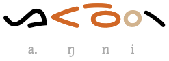
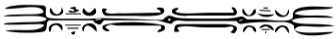
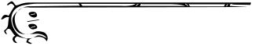
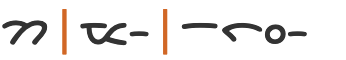
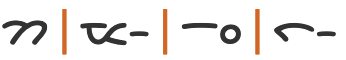

This page brings together basic information about the Batak script and its use for the Mandailing, Simalungun, Toba, PakPak, and Karo languages. It aims to provide a brief, descriptive summary of the modern, printed orthography and typographic features, and to advise how to write languages using the Batak script with Unicode.
Select part of this sample text to show a list of characters, with links to more details.
Zero-width spaces have been added to the sample text so that it will wrap after orthographic syllables, rather than shoot off the right side of the page.
Change size: 36px
The Batak script ( ᯘᯮᯒᯖ᯲ᯅᯖᯂ᯲ ) is used on the island of Sumatra to write the five Batak dialects Karo, Mandailing, Pakpak, Simalungun, and Toba, which can differ as much as do the related languages English and Dutch. The script is taught in schools more for cultural purposes than as a practical writing system for Batak. The overwhelming majority of writing by Bataks is in Indonesian, as elsewhere in Indonesia). Batak script can be found in the signage of shops and governmental institutions.ek
It is thought that the script may be derived from the Kawi and Pallava scripts, both ultimately derived from the Indian Brahmi script, or from the hypothetical Proto-Sumatran script influenced by Pallava.ws For much more detail on Batak origins and development see Sejarah Aksara Batakuk.
The Batak script is an abugida. Consonants carry an inherent vowel which can be modified by appending vowel signs to the consonant. See the table to the right for a brief overview of features for the modern Batak orthography (the character counts are for a superset of all 5 languages described here). Each language uses its own set of consonants and vowel signs from this set, and several Unicode code points are specific to a particular language.
Batak text runs left to right in horizontal lines. Words are not separated by spaces, and text segmentation doesn't pay attention to word boundaries.
The 33 consonant letters in the Unicode Batak block include many duplicates because of variations in the orthography from language to language. Repertoire extensions for non-native sounds occur in Mandailing and Toba, by applying the tompi diacritic to characters.
Syllable-initial clusters appear to be restricted to prenasalised consonants (for which there are 2 dedicated letters) or nasal+consonant, which are written using an unpronounced standalone vowel, and these only occur in Karo.
Word-final consonant sounds may be represented by 2 final-consonant diacritics. Otherwise, if nothing follows, they are ordinary consonants followed by a visible 1BF2 (or 1BF3 in Karo and Simalungun).
A peculiarity of Batak is that a syllable CVCv (where 'v' represents the vowel-killer) is rendered as CCVv when the vowel is expressed using a vowel sign.
The Batak orthography has an inherent vowela, and represents vowels using language-specific selections from the superset of 9 vowel signs. There are no pre-base vowels or circumgraphs. All vowel signs are combining marks, and are stored after the base character.
Batak has 3 independent vowels (one with 2 alternate shapes) which are optionally mixed with standalone vowels represented by vowel signs applied to ᯀ (or ᯁ in Simalungun).
Batak has very little punctuation, and the punctuation marks that are used are not ASCII characters, and generally indicate section boundaries.
Batak words typically have a root that consists of 2 syllables, with the patterns CVCCVC, CVCV, CVCVC, or CVCCV.
Affixes added to the word can then make it longer.
Phonology
The following represents the repertoire of the Batak languages Toba, Karo, Mandailing, Simalungun, and Pakpak.
Click on the sounds to reveal locations in this document where they are mentioned.
Phones in a lighter colour are non-native or allophones. Source Wikipedia.
Vowel sounds
Plain vowels
ə is present only in Karo and Pakpak. The languages of the southern group substitute the sound o in words that are otherwise the same.
Consonant sounds
labial
alveolar
palatal
velar
glottal
stop
pb
td
kɡ
ʔ
prenasalised
ᵐb
ⁿd
affricate
t͡ʃd͡ʒ
fricative
s
h
nasal
m
n
ɲ
ŋ
approximant
w
l
j
trill/flap
r
Final h doesn't occur in Toba or Mandailing.
w and j are recent additions to the Toba and Simalungun languages, inherited from Indonesian loan words.
Vowels
Inherent vowel
ᯂ
ka
a following a consonant is not written, but is seen as an inherent part of the consonant letter, so ka is written by simply using the consonant letter. There are 2 inherent vowels in the following word.
ᯂᯉ᯳ᯘᯰ
ᯂ,ᯉ,᯳,ᯘ,ᯰ
Since Batak consonants normally include an inherent vowel, the orthography has ways to indicate a consonant that is not followed by a vowel sound. See novowel.
Post-consonant vowels
The Batak orthography represents vowel sounds following consonants using language-specific selections from a superset of 9 vowel signs. There are no pre-base vowels or circumgraphs. All vowel signs are combining marks, and are stored after the base character.
Four vowel signs are spacing marks, meaning that they consume horizontal space when added to a base consonant.
All vowel signs are typed and stored after the base consonant. The glyph rendering system takes care of the positioning at display time.
Vowel signs
ᯂᯪ
kiː
Batak languages use the following dedicated combining marks for vowels. Some languages have more sounds than others, and some assign the same symbols to different sounds.
Toba & Mandailing
ᯪ,ᯮ,ᯩ,ᯬ
Pakpak
ᯪ,ᯮ,ᯩ,ᯬ,ᯨ
Simalungun
ᯫ,ᯮ,ᯯ,ᯩ,ᯬ,ᯭ
Karo
ᯪ,ᯫ,ᯬ,ᯩ,ᯨ,ᯭ,ᯧ
Different characters may be used for the same sound in Karo.
U ligatures
The vowel sign 1BEE often ligates with the base character, as can be seen in the following examples:
A number of combinations differed in the earlier versions of Noto Sans Batak. The following list shows the ligated forms that were changed due to a request from the Batak Toba community in version 2.004.@GitHub,https://github.com/notofonts/batak/issues/7#issuecomment-2929750740
ᯎᯮ,ᯀᯮ,ᯠᯮ,ᯋᯮ,ᯞᯮ
Vowel reordering
Batak has a unique behaviour if a vowel sign is used between onset and coda consonants.
Although consonants and vowels are typed and stored in the order they are pronounced, the rendered order is: <onset><coda><vowel><vowel-killer>
If a vowel sign is used, the glyphs for the onset and coda consonants are placed side by side, and are followed by the glyphs for the intervening vowel and the vowel-killer. This reordering is produced by the font, and the typed order or order stored in memory remains the same as the spoken order. fig_finals shows an example.

The word a.ŋin ('wind') showing the location of onset and coda consonants and the vowel sign after they have been rearranged by the font. The in memory or typed order is [a ŋ i n ∅].
This also applies to non-spacing marks, such as -u in the following, where the u vowel is attached to the syllable coda (m) when rendered, but follows r in the encoding.
eg.
ᯐᯒᯮᯔ᯲
ᯐ,ᯒ,ᯮ,ᯔ,᯲
Standalone vowels
Batak has two ways to represent standalone vowels.
Vowel signs
The normal approach combines a vowel sign with ᯀ (or ᯁ in Simalungun).
ᯀᯪ,ᯀᯫ,ᯀᯬ,ᯀᯩ,ᯀᯧ,ᯀᯨ,ᯀᯭ
eg.
ᯀᯮᯅᯉ᯲
ᯀᯮᯑᯉ᯲
Independent vowels
Batak also has independent vowels for 3 sounds. The use of ᯤ and ᯥ, rather than the vowel sign combinations shown above, is optional, and spelling of words may vary even within the same document.ab
ᯤ,ᯥ,ᯀ,ᯁ
ᯀ may also represent the sound ha for Pakpak and Karo. The reading is ambiguous.
eg.
ᯤᯉ
ᯥᯑᯉ᯲
ᯀᯎᯂ᯲
Vowel sounds to characters
This section maps the vowel sounds of several Batak languages to common graphemes in the Batak orthography.
The right column indicates what language and in what context the letter is used.
Plain vowels
i
dependent
1BEA
Karo, Mandailing, Pakpak, Toba
dependent
1BEB
Simalungun, Karo (alternative)
standalone
1BE4
all languages
u
dependent
1BEE
Mandailing, Pakpak, Simalungun,Toba
dependent
1BEC
Karo
dependent
1BEF
Simalungun (only with the letter ᯙ)
standalone
1BE5
all languages
e
dependent
1BE9
Karo, Mandailing, Pakpak, Simalungun, Toba
o
dependent
1BEC
Mandailing, Pakpak, Simalungun,Toba
dependent
1BED
Karo
dependent
1BE8
Karo
ə
dependent
1BE7
Karo
dependent
1BE8
Pakpak
a
Inherent vowel
eg.
ᯂᯉ᯳ᯘᯰ
standalone
1BC0
Mandailing, Toba, Karo, Pakpak
standalone
1BC1
Simalungun
Diphthongs and other combinations
ou
dependent
1BED
Simalungun
Vowel absence
Vowel absence principally occurs either when a consonant is a syllable coda, or when a consonant is part of a consonant cluster.
When a consonant is not followed by a vowel, this is indicated using the vowel-killer, which is 1BF2 for Mandailing, Pakpak, and Toba, or 1BF3 for Karo and Simalungun. These vowel-killers are used after final consonants whether they appear word-medially or word finally.
eg.
ᯞᯂ᯲ᯞᯂ᯲
ᯂᯉ᯳ᯘᯰ
ᯀᯉᯂ᯳
Batak consonant letters do not interact to create conjuncts.
Codas can also be written using one of 2 combining marks (see finals).
Consonants
Basic consonants
These are the basic consonant letters in Batak, by language.
Click on each letter for more details and for examples of usage, especially where more than one sound is indicated.
Simalungun
ᯈ,ᯅ,ᯖ,ᯑ,ᯃ,ᯏ,,ᯐ,ᯙ,ᯌ,ᯕ,ᯉ,ᯠ,ᯝ,ᯌ,ᯓ,ᯟ,ᯜ
Mandailing
ᯇ,ᯅ,ᯖ,ᯑ,ᯄ᯦,ᯎ,ᯚ᯦,ᯐ,ᯘ,ᯄ,ᯔ,ᯉ,ᯠ,ᯝ,ᯋ,ᯒ,ᯞ,ᯛ
Pakpak
ᯇ,ᯅ,ᯗ,ᯑ,ᯂ,ᯎ,,ᯐ,ᯙ,ᯀ,ᯔ,ᯉ,,ᯝ,ᯍ,ᯒ,ᯞ,ᯛ
Toba
ᯇ,ᯅ,ᯗ,ᯑ,ᯄ᯦,ᯎ,,ᯐ,ᯙ,ᯂ,ᯔ,ᯉ,ᯠ,ᯝ,ᯍ,ᯒ,ᯞ,ᯛ
Karo
ᯇ,ᯆ,ᯗ,ᯑ,ᯂ,ᯎ,ᯢ,ᯣ,ᯡ,ᯐ,ᯙ,ᯀ,ᯔ,ᯉ,ᯝ,ᯋ,ᯒ,ᯞ,ᯛ
Repertoire extension
ᯄ᯦,ᯚ᯦
Mandailing uses 1BE6 to change the sound of a couple of letters.
It changes the sound of ᯄ from h to k, and changes the sound of ᯚ from s to t͡ʃ.
Note the difference in position for 1BF1 and 1BE6.
The 1st Batak Toba Cultural Congress in 2022 it was agreed to use ᯄ in Toba for ha, but to introduce ᯄ᯦ for ka in order to clearly differentiate between those sounds in the increasing number of loan words and foreign names entering the Batak Toba language.@GitHub,https://github.com/notofonts/batak/issues/7#issuecomment-2978296592
See notes from the Batak Toba Cultural I Congress held in October 2022.
The following is from a report in the IPMI News. The right column shows a Google translation.
(3) Bentuk induk surat ᯅ 'ba' perlu dipertimbangkan untuk menjadi bentuk bulat lonjong ᯆ 'ba' karena ini yang lebih banyak di naskah, tetapi kongress mengukuhkan penggunaan induk surat ᯖ 'ta' yang tetap digunakan, bukan bentuk varian ᯗ 'ta' dan induk surat ᯋ 'wa' ditetapkan untuk digunakan, bukan bentuk varian ᯍ 'wa' ini yang digunakan;
(3) The parent letter form ᯅ 'ba' needs to be considered to be the round oval form ᯆ 'ba' because this is more common in the manuscript, but the congress confirmed the use of the parent letter ᯖ 'ta' which is still used, not the variant form ᯗ 'ta' and the parent letter ᯋ 'wa' is determined to be used, not the variant form ᯍ 'wa' which is used;
(4) untuk menuliskan kata-kata dengan huruf /x; X/ terlebih dahulu diadopsi ke sistem bahasa Batak Toba menjadi /eks/, /v;f/ menjadi /p/, dan /z/ menjadi /j/ sehingga dapat menggunakan aksara Batak Toba sekaligus juga disarankan agar nama-nama yang dimulai dengan huruf tersebut diadopsi dahulu ke bahasa Batak Toba;
(4) to write words with the letter /x; X/ was first adopted into the Toba Batak language system to become /eks/, /v;f/ became /p/, and /z/ became /j/ so that the Toba Batak script can be used at the same time it is also suggested that names starting with these letters be adopted first into the Toba Batak language;
(5) Oleh karena /c/ dan /k/ telah menjadi fonem bahasa Batak Toba dan telah ditetapkan untuk memperkaya fonem tersebut, maka ᯚ᯦ 'ca' dan ᯄ᯦ 'ka' diambil dari aksara Angkola Mandailing. Cara penulisan seperti ini jugalah yang digunalan unek menulis bahasa selain bahasa Batak Toba;
(5) Because /c/ and /k/ have become phonemes of the Toba Batak language and have been determined to enrich these phonemes, ᯚ᯦ 'ca' and ᯄ᯦ 'ka' are taken from the Angkola Mandailing script. This way of writing is also used to write languages other than the Toba Batak language;
(6) menetapkan varian induk surat ᯋ 'wa', bukan ᯍ 'wa';
(6) determining the variant of the parent letter ᯋ 'wa', not ᯍ 'wa';
(7) Posisi anak surat disepakati seperti penulisan pada pustaha laklak termasuk pangolat yang perlu ditulis agak horizontal, tidak terlalu miring;
(7) The position of the child letter is agreed upon as in the writing on pustaha laklak including pangolat which needs to be written somewhat horizontally, not too slanted;
(8) untuk mempermudah pemahaman menulis dan membaca aksara batak, maka perlu penggunaan tanda-tanda baca seperti tanda titik, tanda koma, tanda seru, tanda tanya dalam ejaan Bahasa Batak Toba kecuali tanda tanda bindu ᯼ (tanda awa dan akhir bab) tetap digunakan;
(8) to make it easier to understand how to write and read the Batak script, it is necessary to use punctuation marks such as periods, commas, exclamation marks, question marks in the Toba Batak spelling except for the bindu marks ᯼ (beginning and end of chapter marks) which are still used;
(9) Penggunaan angka Arab dan angka Romawi yakni 1, 2, 3, 4, 5.....I, II, III, IV, V dst dapat digunakan dalam aksara Batak Toba, tetapi diutamakan seperti penggunaan di pustaha laklak, yakni jika masih singkat seperti ᯘᯑ /sada/ 'satu', ᯑᯮᯀ 'dua' 'dua', ᯘᯔ᯲ᯇᯮᯞᯮ ᯘᯑ /sampulu sada/ 'sebelas', dan seterusnya;
(9) The use of Arabic and Roman numerals, namely 1, 2, 3, 4, 5.....I, II, III, IV, V, etc. can be used in the Toba Batak script, but it is prioritized as used in the pustaha laklak, namely if it is still short such as ᯘᯑ /sada/ 'one', ᯑᯮᯀ 'two' 'two', ᯘᯔ᯲ᯇᯮᯞᯮ ᯘᯑ /sampulu sada/ 'eleven', and so on;
(10) Pemenggalan kata dilakukan berdasarkan prinsip silabis (satu silaba atau suku kata, yang terdiri dari satu vokal), bukan berdasarkan pemenggalan morfemis; dan
(10) Word segmentation is carried out based on the syllabic principle (one syllable or syllable, consisting of one vowel), not based on morphemic segmentation; and
(11) Aksara Batak Toba dapat digunakan menuliskan bahasa selain bahasa Batak Toba sebagai perwujudan dari interaksi global', demikian dibacakan Drs. Flansius Tampulolon, M.Hum. sebagai ketua Perumus.
(11) The Toba Batak script can be used to write languages other than the Toba Batak language as a manifestation of global interaction', as read by Drs. Flansius Tampulolon, M.Hum. as the head of the Formulators.
Onsets
The only syllable-initial consonant clusters in Batak appear to be nasal+consonant or prenasalised consonants. These appear to be limited to the Karo languageuk.
ᯣ,ᯢ
For the Karo language there are two dedicated characters for prenasalised sounds. They are ᯣ and ᯢ.
eg.
ᯀᯧᯣᯱ
The Surat Batak courseware describes an approach for other nasal+consonant combinations in their description of the Karo language. This involves writing a syllable-final nasal consonant after an unpronounced, standalone schwa (ᯀᯧ). An initial ŋ however is written ᯀᯰ.
eg.
ᯀᯧᯉ᯳ᯗᯧᯒᯧᯔ᯳
ᯀᯧᯉ᯳ᯠᯪᯑᯱᯂᯧᯉ᯳
ᯀᯧᯉ᯳ᯐᯬᯒ᯳ᯐᯬᯒ᯳
ᯀᯰᯂᯧᯒᯪᯂᯧᯉ᯳
Codas
ᯰ,ᯱ
Marks Batak uses one of 2 diacritics to indicate syllable-final consonants.
1BF0 is used for final -ŋ in all languages.
1BF1 is used for final -h in Karo, Mandailing, and Simalungun. (This consonant doesn't appear in syllable-final position in Toba and Mandailing.)
Otherwise a normal consonant letter is used, followed by the vowel-killer, which is either 1BF2 (Mandailing, Pakpak, Toba) or 1BF3 (Karo, Simalungun). These characters are used after final consonants whether they appear word-medially or word finally.
eg.
ᯞᯂ᯲ᯞᯂ᯲ᯥᯑᯉ᯲ᯀᯮᯑᯉ᯲ᯗᯉ᯲ᯑᯰᯂᯉ᯳ᯘᯰᯀᯉᯂ᯳
Consonant sounds to characters
This section maps the consonant sounds of several Batak languages to common graphemes in the Batak orthography.
The right column indicates what language and in what context the letter is used.
p
ᯇ
Karo, Mandailing, Pakpak, Toba
ᯈ
Simalungun
b
ᯅ
Mandailing, Pakpak, Toba, Simalungun
ᯆ
Karo
ᵐb
ᯣ
Karo
t
ᯖ
Mandailing, Simalungun, Toba
ᯗ
Karo, Pakpak and also Toba
t͡ʃ
ᯘ
Pakpak
ᯡ
Karo
ᯠ
Karo also
ᯚ᯦
Mandailing
d
ᯑ
all languages
ⁿd
ᯢ
Karo
d͡ʒ
ᯐ
all languages
k
ᯂ
Pakpak, Karo (both syllable-initial and -final), Toba (syllable-final only)
ᯃ
Simalungun (syllable-final only)
ᯄ
Mandailing (syllable-final only)
ᯄ᯦
Mandailing (syllable-initial using the extended repertoire)
ɡ
ᯎ
Karo, Mandailing, Pakpak, Toba
ᯏ
Simalungun
s
ᯘ
Karo, Pakpak, Toba
ᯚ
Mandailing
ᯙ
Simalungun
h
ᯄ
Mandailing (syllable initial)
ᯌ
Simalungun (syllable initial)
ᯂ
Toba (syllable initial)
ᯀ
Pakpak, Karo
m
ᯔ
Karo, Mandailing, Pakpak, Toba
ᯕ
Simalungun
n
ᯉ
all languages
ᯊ
Mandailing (alternative)
ɲ
ᯠ
Mandailing, Simalungun, Toba
ŋ
ᯝ
all languages
w
ᯋ
Karo, Mandailing, Pakpak, Toba
ᯌ
Simalungun (loan words)
ᯍ
Pakpak, Toba (alternative shape)
r
ᯒ
Karo, Mandailing, Pakpak, Toba
ᯓ
Simalungun
l
ᯞ
Karo, Mandailing, Pakpak, Toba
ᯟ
Simalungun
j
ᯛ
Karo, Mandailing, Pakpak, Toba (loan words)
ᯜ
Simalungun (loan words)
Encoding choices
There appears to be little to report with regards to Batak encoding choices. No characters decompose during NFD normalisation, no characters have an appearance that can be created by combining others, and no glyphs are easily mistaken for other Unicode characters.
CVC ordering
One potential trap to be aware of is described in vowel_reorder. Essentially, characters making up syllables with the shape CVCv are stored in memory in that order, and not in the order CCVv in which they are displayed. The display order is produced by the font, and not by typing the characters in the visual order.
Numbers
tbd
Text direction
Batak text runs left to right in horizontal lines that flow from top to bottom.
References to vertical, bottom to top, writing really refer to sideways writing on things such as bamboo, rather than to a vertical writing mode, according to Everson and Kozok.ek
The main shaping behaviour takes place where CVC syllables swap the displayed order of the nucleus and coda (although the in memory sequence retains the same order as the sounds are spoken). For more information see vowel_reorder.
Although it is a Brahmi-derived script, there are no conjunct forms.
Care needs to be taken in certain cases where multiple diacritics are applied to the same base. When both 1BE9 and 1BF0 occur together they are rendered side by side, rather than one atop the other. The same goes for 1BE9 and 1BF1.
Multiple combining marks rendered side by side above the base.
Another important aspect of shaping occurs where 1BEE ligates with or is positioned differently according to its base. For example:
ᯖᯮ ᯇᯮ ᯌᯮ ᯞᯮ
Examples of shaping and positioning applied to 1BEE when it follows a particular base character.
Typographic units
Word boundaries
Words are not separated by spaces, and words are not relevant in determining boundaries for typographic units.
Graphemes
The rules for segmenting Batak are not clear. See a discussion of approaches to line-breaking.
Batak is normally written as an unbroken sequence of letters, without punctuation other than a few paragraph or section dividers.
The Unicode repertoire includes code points for the following bindu.
phrase
᯿
paragraph
᯼
᯽
title separator
᯾
᯿ is used to disambiguate text and follows a word, partially surrounding the final letter.
᯼ and ᯽ are used to indicate the beginning of paragraphs and stanzas. It can be written as a large sign that physically separates the sections of text, eg. by means of a long trailing line leading from it.
᯾ is used to separate a title from the following text.
Batak also uses symbols to begin texts which do not appear to have Unicode code points. These are often decorative and take many forms.
A pustaha text (see generallayout) will often begin with a godang bindu, while bamboo texts will commonly begin with the pinarjolma bindu.


Examples of the godang bindu (top), and the pinarjolma bindu (bottom).
Line & paragraph layout
Line breaking & hyphenation
The rules for where line-break opportunities occur are not very clear. The following paragraphs describe alternative approaches. After each description, the effect is shown on line-break opportunities for the word ᯂᯔ᯳ᯇᯪᯞ᯳
.
Currently, Unicode properties assigned to Batak letters have the value AL (ordinary alphabetic and symbol characters), which requires other characters to provide break opportunities; otherwise, unless tailored rules are applied, no line breaks are allowed between pairs of letters. This is clearly inappropriate for Batak, given the lack of spaces and the paucity of punctuation marks. As a result, Batak text usually runs off the right edge of a web page, because the line is not broken.
Everson & Kozok, in their Batak Unicode proposalek, say that lines are broken after a 'full orthographic syllable', which they define to be C(V(Cp|F)) where a consonant C may be followed by a vowel V which may be followed either by a killed consonant Cp or a final -ng or -h F. This actually represents a full phonetic syllable, including cases such as ᯂᯂ᯲kak.
On the other hand, proposals are currently being discussed by the Unicode Script Ad Hoc committee to break after a BCCS except where a vowel-killer appears – in which case, the whole phonetic syllable would be kept together. The latter exception is primarily motivated by the limitations of current rendering systems, which would struggle to achieve the reordering of final-consonant and vowel sign before a vowel-killer if a line-break intervenes.

However, it is not hard to find examples of written Batak where line-breaks can occur before a vowel sign or a vowel-killer, indicating that line-break opportunities can occur before any spacing glyph. Note that the vowel sign and vowel-killer are represented in Unicode as combining marks, so we are splitting the BCCS unit here. Note also that the order of characters doesn't change. For examples, see handwritten examples of line-initial vowel-killer, and vowel sign, and both in this printed text.
If line-breaks were introduced at grapheme cluster boundaries, the order of characters in a syllable rendered as CCVv would presumably not be maintained, so this does not appear to be a viable approach.

Baselines, line height, etc.
tbd
Batak uses the so-called 'alphabetic' baseline, which is the same as for Latin and many other scripts.
Page & book layout
General page layout & progression
The following is a description of media used for writing Batak, taken from Wikipediawsi,#Media.
Batak letters are traditionally written in a number of media, among which the most common are bamboo, bone, and bark. Manuscripts with these media can be found in various sizes and sophistication.
Common everyday writings are inscribed on the surface of bamboo or bone with a small knife. These strokes are then blackened with soot to improve readability. Bamboo and bones written on Batak letters are commonly used as daily tools, for example as storage tubes for areca nut or necklaces as well as amulets to ward off evil.
Traditional Batak priests (datu) write their knowledge on concertina-like scrolls called pustaha. To make pustaha, the bark of the agarwood tree ( Aquilaria malaccensis) is cut and mashed into long sheets called laklak . The length of these sheets can range from 60 cm to 7 m, but the largest known pustaha (now stored in the Tropenmuseum, Netherlands) is around 15 m long. This sheet of laklak is then folded, and both ends glued to a wooden cover called lampak, which often has a Boraspati lizard engraved on it. Unlike the bamboo and bone script, the Pustaha script is written in ink using a pen from the ribs of palm leaves (Arenga pinnata) called suligi or a pen from buffalo horn called tahunan.
Paper was only used in limited quantities from the mid-19th century onwards, but bamboo, bone, and bark continued to be used as the main medium for writing Batak script until the 20th century when the tradition of writing Batak script began to disappear.


{kind=link}